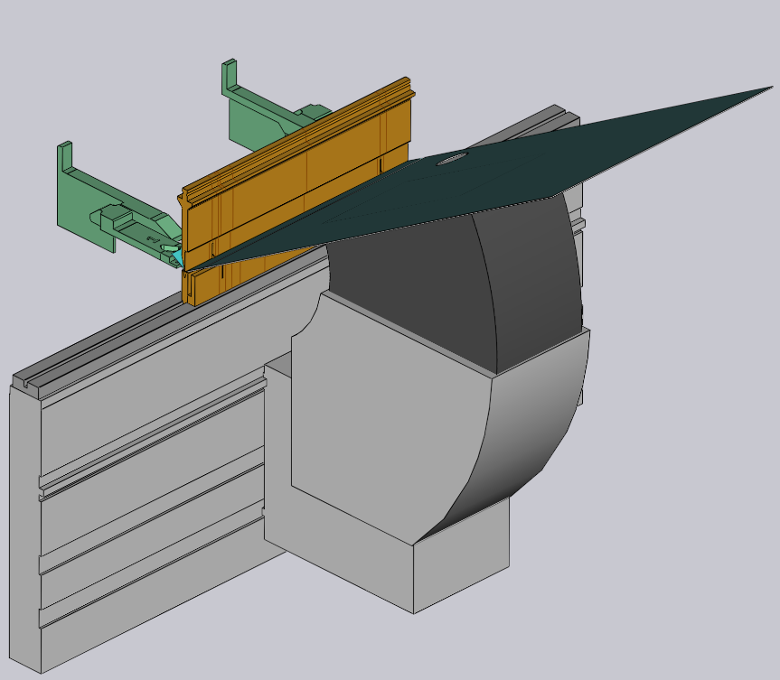

Aides au pliage
Les aides au pliage sont des composants de la plieuse qui aident à plier des tôles plus épaisses. Elles sont conçues pour fournir un support et un contrôle supplémentaires pendant le processus de pliage, garantissant des résultats précis et cohérents.
Une plieuse peut avoir plusieurs aides au pliage ou une seule aide au pliage installée, selon les exigences spécifiques de l’opération de pliage.
| Les aides au pliage ne sont applicables que pour les séries TruBend 5000 et 8000. |

Configuration des aides au pliage
Les aides au pliage peuvent être configurées dans Base de données / Machines / Paramètres.

Lorsqu’une pièce est importée et qu’une machine avec aides au pliage est sélectionnée, TecZone Bend configure automatiquement les aides au pliage en fonction des exigences de la pièce.
Utilisation des aides au pliage
Une fois qu’une solution de pliage réalisable est générée, les aides au pliage peuvent encore être ajustées pour optimiser le processus de pliage.
Cliquez directement sur l’aide au pliage dans TecZone Bend pour ouvrir le panneau Aide au pliage. Le numéro dans le panneau d’aide au pliage représente la séquence de pliage.
![][Panneau d’aide au pliage](img/bendaidpanel.png)
-
Index - Indique l’aide au pliage actuellement sélectionnée.
-
Position (Z,R) - Utilisé pour ajuster la position de l’aide au pliage le long des axes Z et R.
-
Activé - Cochez cette case pour activer l’aide au pliage.
-
Placement auto - Utilisé pour positionner automatiquement l’aide au pliage en fonction de la géométrie de la pièce.
Vitesse :
-
Descente - Utilisé pour ajuster la vitesse de rétraction de l’aide au pliage après l’opération de pliage.
-
Définir tous les plis - Utilisé pour appliquer le paramètre de vitesse actuel à tous les plis de la séquence.
Avancé :
-
Méthode - Utilisé pour définir le mode opératoire de l’aide au pliage. Les options incluent :
-
Par défaut - Réinitialise les paramètres de l’aide au pliage aux valeurs par défaut.
-
Retour à l’UDP - Configure l’aide au pliage pour revenir à une position définie par l’utilisateur après chaque pli.
-
Incliner le produit - Permet à l’aide au pliage d’incliner la pièce pendant le processus de pliage pour un meilleur alignement.
-
Angle statique - Permet de définir un angle fixe pour l’aide au pliage pendant l’opération.
-
-
Angle d’arrêt - Utilisé pour définir l’angle auquel l’aide au pliage s’arrêtera pendant l’opération.
Position de stationnement des aides au pliage
Les aides au pliage peuvent être stationnées dans une position désignée lorsqu’elles ne sont pas utilisées. Cela aide à optimiser l’espace de travail et garantit la sécurité pendant l’opération. Cela évite également les collisions avec d’autres composants de la machine.
Les aides au pliage peuvent être stationnées dans les positions suivantes :
-
Par défaut - Les aides au pliage peuvent être stationnées jusqu’à la longueur de la table.
-
Petit - Les aides au pliage peuvent être placées à 700 mm au-delà de la longueur de la table.
-
Grand - Les aides au pliage peuvent être placées à 1200 mm au-delà de la longueur de la table.

Pour les machines tandem, il y a quatre aides au pliage disponibles. Pour les machines tandem gauches, seul le stationnement côté gauche est autorisé. Pour les machines tandem droites, seul le stationnement côté droit est autorisé.
|
L’option de position de stationnement ne sera affichée que pour les séries TruBend 8000 et les machines VarioPress. Pour les machines tandem B36, la position de stationnement petit n’est pas applicable. |
Création d’aides au pliage personnalisées
Afin de créer des aides au pliage personnalisées dans TecZone Bend, vous devez d’abord créer un fichier ini qui définit les paramètres de l’aide au pliage et des fichiers mesh pour les composants de l’aide au pliage (Chariot, Table et Plaque).
[BAData]
; Le nom défini par l'utilisateur de l'aide au pliage. Utilisé uniquement pour les aides au pliage personnalisées
Name=BATest
; La plage de largeurs en V que l'aide au pliage peut supporter
DieV=16,250
; La plage de hauteurs de matrice que l'aide au pliage peut supporter
DieHeight=-30,250
; Angle maximum, en degrés
MaxAngle=55
; Capacité de levage, en kg
Payload=300
; Vitesse de levage maximale, en degrés/seconde
Speed=45
; Lorsque l'aide au pliage est à X=0, c'est la limite de la table de support en vue de dessus
Table=-159,-1032,159,-245.6
; L'étendue X de l'aide au pliage (lorsqu'elle est positionnée à 0)
XExtent=-213,213
; Indique si l'utilisateur peut modifier la vitesse d'avancement
CanChangeForwardSpeed=False
; Indique si l'angle d'arrêt de sécurité est possible dans la machine
CanStopAtReturn=True
; Le mouvement de l'aide au pliage peut-il être varié en utilisant différentes méthodes ?
AdvancedControl=True
; À quel type d'aide au pliage existante peut-elle être mappée ? Utilisé uniquement par les aides au pliage personnalisées
EType=TB8000_2000N_B36
[Carriage]
Model=Carriage.mesh
Stroke=-1000,1000
Color=White
Shift=0,0,100
[Table]
Model=Table.Mesh
Stroke=50,200
Color=White
[Plate]
Model=Plate.mesh
Stroke=0,56
Color=#4A4A4APlacez le fichier ini et les fichiers mesh correspondants dans un dossier qui peut ensuite être importé dans TecZone Bend.
Importation d’aides au pliage personnalisées
Pour importer des aides au pliage personnalisées :
-
Accédez à Fichier / Importer / Aides au pliage… et sélectionnez le fichier ini déjà créé (assurez-vous que les fichiers mesh correspondants se trouvent dans le même dossier).
-
Les aides au pliage importées seront alors disponibles dans le menu déroulant de sélection d’aide au pliage dans les paramètres de la machine.

Cette option est utile lorsqu’une aide au pliage doit être personnalisée pour des tâches de pliage spécifiques ou lors de l’utilisation d’aides au pliage spécialisées non incluses par défaut dans la base de données TecZone Bend.